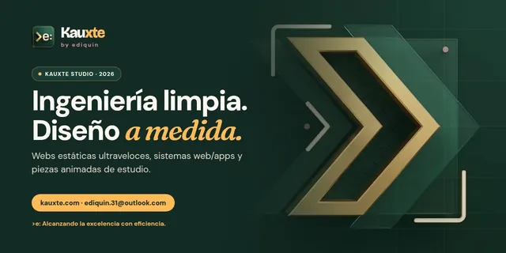
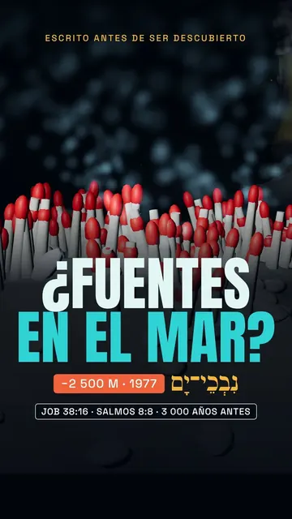
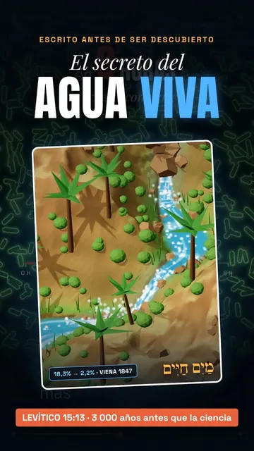
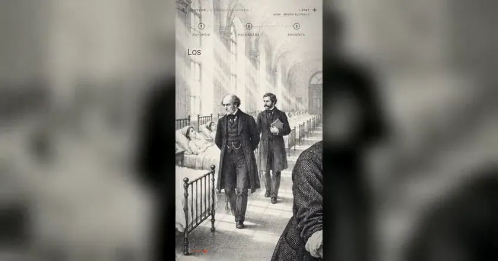
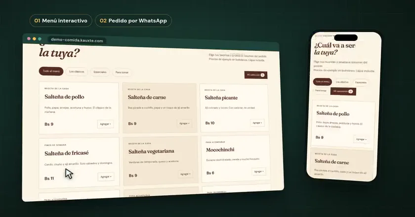

Honor posters
A series for Pathfinder clubs: one system (large title, emblem in the centre, date on a plaque) that changes texture with each topic. Tap a poster to see it large.
Path 01
Graphic design, branding, video editing and motion graphics: posters, badges and uniforms for the church, identities and 3D logos for brands, and Shorts that share the Message. Generative AI is part of my workshop, and I finish every piece with a designer's judgement.
Graphic design and branding
Clear hierarchy, contrast that reads on a phone and one palette used everywhere: that is how I design event posters, complete identities and logos that also live in 3D.
A series for Pathfinder clubs: one system (large title, emblem in the centre, date on a plaque) that changes texture with each topic. Tap a poster to see it large.
The >e: logo, green and gold palette, typography, icons and banners for social media and GitHub.

The official logo (bottom left) turned into a 3D mountain with Three.js. Drag it to see it from every side.

Each format gets its own layout, not a crop of the last one.
For the church · Pathfinders and Youth Ministries, MBON
I design with an agent that knows the official emblems, scarves and uniforms, and repairs the symbols when the AI distorts them. That way a whole series comes out consistent and true to the club's identity.
Badges for courses and camps, made to be embroidered: few colours, a thick border and text you can read at 8 cm.
Outings, receptions, celebrations and courses, ready for WhatsApp the same day: date, time and place first.
«Trazo andino», for MBON coordinators at the 6th South American Camporee: the Andes and Mount Illimani as a stripe, with the lake and a canoe at the front. And the Club Central T-shirt, with feathers and the club lion. Swipe to see each one.
Video editing and motion graphics
I write the script, record or generate the voice, edit, animate and add subtitles. The Nativzar channel series «Written before it was discovered» already has seven episodes (in Spanish).
 Ep. 7 · NewThey said Solomon was wrong about antsProverbs 6:6–8 · 2:55
(opens YouTube)
Ep. 7 · NewThey said Solomon was wrong about antsProverbs 6:6–8 · 2:55
(opens YouTube) Ep. 6Healing by drawing blood?Leviticus 17:11 · 2:51
(opens YouTube)
Ep. 6Healing by drawing blood?Leviticus 17:11 · 2:51
(opens YouTube) Ep. 4Who invented quarantine?Leviticus 13 · 1:46
(opens YouTube)
Ep. 4Who invented quarantine?Leviticus 13 · 1:46
(opens YouTube)
Ep. 3Paths in the sea?Psalm 8:8 · 1:36 (opens YouTube)
Ep. 2Living water: the secret of hygieneLeviticus 15:13 · 1:30 (opens YouTube) Ep. 1Why is the sea never full?Ecclesiastes 1:7 · 1:41
(opens YouTube)
Ep. 1Why is the sea never full?Ecclesiastes 1:7 · 1:41
(opens YouTube) ReflectionThe path of lifeMatthew 7:13–14 · 0:53
(opens YouTube)
ReflectionThe path of lifeMatthew 7:13–14 · 0:53
(opens YouTube)At Kauxte I offer ten video styles that I build in code, with Remotion and Three.js, and with AI agents: editorial cut-outs, app screens in 3D, isometric worlds, hand-drawn whiteboards and more.

Docu Cut
Live product Isometric 3D world
Isometric 3D world Live whiteboard
Live whiteboard Block world
Block worldPhoto retouching and compositing
I don't just cut photos out: I build real people and objects into a design with matching light, colour and shadow, and prepare each piece for print, for a thumbnail or for a lightweight website.
Generative AI
I use AI as part of the workshop, not as a shortcut: I generate drafts, voices and shots, then choose, correct and finish each piece with a designer's eye.

Characters and illustrations made with image generators, corrected until every detail of the uniform and emblems is right.
Cinematic shots with Higgsfield and animation in code with Remotion.
Narration with ElevenLabs, my own cloned voice and audio clean-up.
I built AI_design_7thday, skills that teach AI which emblem, scarf and colours belong on each Pathfinder, Adventurer and Master Guide poster. How it's built
Right now
I want to go from sketch to interface design with a tidy system before I code it. I'm practising:
Tools
Contact
Pieces for your church, your club or your brand, and videos for social media. Tell me what you need and I'll reply with a clear proposal. I work in Spanish and English.
Also need a website, an app or an agent? See software and AI